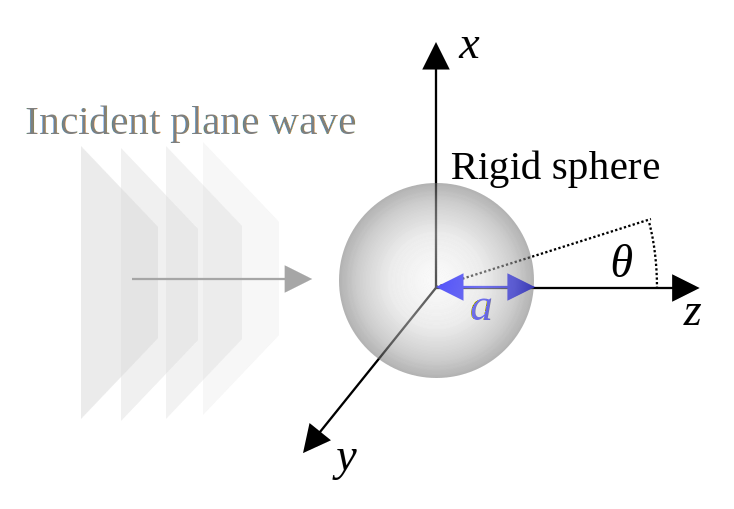

Consider an incident plane progressive wave traveling in the \(z\) direction: \begin{align}\label{eq:p:in:cart} p_\mathrm{in} = p_0 e^{i(kz-\omega t)} = p_0 e^{i(kr\cos\theta -\omega t)} \,, \end{align} where \(\theta\) is the spherical polar angle. To match the boundary condition of the rigid sphere, it is necessary to express Eq. \eqref{eq:p:in:cart} in terms of the eigenfunctions of the axisymmetric spherical wave equation, \begin{align}\label{eq:p:in:B} p_\mathrm{in}(r,\theta,t) = p_0e^{-i\omega t} \sum_{n=0}^\infty B_n h_n(kr) P_n(\cos\theta)\,, \end{align} where \(h_n(x) \equiv -ie^{ix}/x\) is the spherical Hankel function of the first kind of order \(n\), and where \(P_n\) is the Legendre polynomial of order \(n\). The expansion coefficient \(B_n\) is obtained from the Legendre series: \begin{align}\label{eq:use-orth} e^{ikr\cos\theta } = \sum_{n=0}^\infty B_n P_n(\cos\theta)\,. \end{align} Multiplying both sides of Eq. \eqref{eq:use-orth} by \(P_m(\cos\theta)\sin\theta\) and integrating over \(\theta\) from \(0\) to \(\pi\) yields \begin{align}\label{eq:use-orth:1} \int_0^\pi e^{ikr\cos\theta} P_m(\cos\theta) \sin\theta\,d\theta = \sum_{n=0}^\infty B_n \int_0^\pi P_n(\cos\theta) P_m(\cos\theta) \sin\theta \,d\theta\,. \end{align} The right-hand side of Eq. \eqref{eq:use-orth:1} is integrated by invoking the orthogonality relation of Legendre polynomials, \begin{align}\label{eq:legendre} \int_{-1}^1 P_n(x)P_m(x)dx = \frac{2}{2n+1}\delta_{nm}, \end{align} resulting in \begin{align}\label{eq:use-orth:2} %\int_0^\pi e^{ikr\cos\theta} P_m(\cos\theta) \sin\theta\,d\theta = \sum_{n=0}^\infty B_n h_n(kr) \frac{2}{2n+1}\delta_{nm} \,. B_n = (n + 1/2)\int_{-1}^1 e^{ikr\zeta} P_n(\zeta) \,d\zeta \,, \end{align} where the integration variable \(\zeta = \cos\theta\) has been introduced. There are several ways to integrate Eq. \eqref{eq:use-orth:2}, like Taylor expanding the complex exponential and integrating polynomials (according to Prof. Russell) or following the approach outlined in Appendix A here. In any case, \(\int_{-1}^1 e^{ikr} P_n(\zeta) d\zeta = 2i^n j_n(kr)\), where \(j_n\) is the spherical Bessel function of order \(n\), so Eq. \eqref{eq:use-orth:2} becomes \begin{align}\label{eq:B} B_n = i^n (2n + 1)j_n(kr)\,. \end{align} Combining Eq. \eqref{eq:B} with Eq. \eqref{eq:p:in:B} yields the partial wave expansion of the incident field: \begin{align}\label{eq:p:in} p_\mathrm{in} = p_0 e^{-i\omega t} \sum_{n=0}^\infty i^n (2n + 1) j_n(kr) P_n(\cos\theta)\,. \end{align} For an animation of this expansion for \(p_\mathrm{in}\), see Prof. Russell's Acoustics and Vibration Animations.
The rigid sphere of radius \(a\) is placed such that its center coincides with the origin, as shown below:
The scattered field is expanded in spherical coordinates as \begin{align}\label{eq:p:sc} p_\mathrm{sc}(r,\theta,t) = p_0 e^{-i\omega t} \sum_{n=0}^\infty A_n h_n(kr) P_n(\cos\theta)\,, \end{align} where the factor of \(p_0\) is included so as to keep the expansion coefficients dimensionless.
To satisfy the rigid boundary condition at \(r = a\), the sum of the normal components of the particle velocities of the incident and scattered waves must be zero at \(r = a\). To obtain the particle velocities, recall that the momentum equation for time-harmonic waves in spherical coordinates is \begin{align}\label{eq:v} \vec{v}(r,\theta,\phi) = \frac{1}{i\omega \rho_0} \left( \vec{e}_r\frac{\partial p}{\partial r} + \vec{e}_\theta\frac{1}{r}\frac{\partial p}{\partial \theta} + \vec{e}_\phi\frac{1}{r\sin\theta} \frac{\partial p}{\partial\phi} \right). \end{align} Only the radial component of Eq. \eqref{eq:v} is relevant to matching the normal component of the particle velocity. The radial velocity component corresponding to Eq. \eqref{eq:p:in} is \begin{align}\label{eq:v:in} v^{(r)}_\text{in} &= \frac{p_0 e^{-i\omega t}}{i\rho_0 c_0} \sum_{n=0}^{\infty} i^n (2n+1) j_n'(kr) P_n(\cos\theta)\,, \\ \end{align} where the prime (\(\prime\)) denotes a derivative, and where it has been noted that \(c_0 = \omega/k\). Similarly, the radial velocity component corresponding to Eq. \eqref{eq:p:sc} is \begin{align}\label{eq:v:sc} v^{(r)}_\text{sc} &= \frac{p_0e^{-i\omega t}}{i \rho_0 c_0} \sum_{n=0}^\infty A_n h_n'(kr)P_n(\cos\theta) \,. \end{align} The sum of the radial incident and scattered particle velocities vanishes at \(r=a\), which is to say that \[-v_{\text{in}}^{(r)}(r=a) = v_{\text{sc}}^{(r)}(r=a)\,,\] which in terms of Eqs. \eqref{eq:v:in} and \eqref{eq:v:sc} reads \begin{align}\label{eq:terms} -{\sum_{n=0}^{\infty} i^n (2n+1) j_n'(ka) } & = { \sum_{n=0}^\infty A_n h_n'(ka) }\,, \end{align} where common terms have been canceled. Equation \eqref{eq:terms} holds for every term in the summation, so \(-i^n (2n+1) j_n'(ka) = { A_n h_n'(ka) }\). Solving for the expansion coefficients yields \begin{align}\label{eq:A} {A_n = - i^n (2n+1) \frac{j_n'(ka) }{h_n'(ka)} \,.} \end{align} Equation \eqref{eq:A} in combination with Eq. \eqref{eq:p:sc} describes the scattered field: \begin{align}\label{eq:p:sc:exact} {p_\text{sc}(r,\theta,t) = - p_0 e^{-i\omega t}\sum_{n=0}^{\infty} i^n (2n+1) \frac{j_n'(ka) }{h_n'(ka)} h_n (kr) P_n (\cos \theta) } \,. \end{align} The scattered velocity is obtained from Eq. \eqref{eq:v}, where \(\phi\) component vanishes due to the axisymmetry of the problem: \begin{align*} \vec{v}_\mathrm{sc} &= \frac{-p_0e^{-i\omega t}}{i\omega \rho_0} \sum_{n=0}^{\infty} i^n (2n+1) \frac{j_n'(ka) }{h_n'(ka)} \left[ \vec{e}_r h_n' (kr) P_n (\cos \theta) + \vec{e}_\theta\frac{1}{r}h_n (kr) P_n' (\cos \theta) \right]. \end{align*} The intensity in the radial direction is \begin{align}\label{eq:I:exact} %I^{(r)} = \tfrac12\Re [p^* {v}^{(r)}] = \tfrac12 p_0^2 \sum_{n=0}^{\infty} i^n (-i)^n (2n+1)^2 \frac{j_n'^2(ka) }{|h_n'(ka)|^2} |h_n (kr)|^2 P_n^2 (\cos \theta) \\ I^{(r)} = \tfrac12\Re [p^* {v}^{(r)}] = \tfrac12 p_0^2 \sum_{n=0}^{\infty} (2n+1)^2 \frac{j_n'^2(ka) }{|h_n'(ka)|^2} |h_n (kr)|^2 P_n^2 (\cos \theta) \end{align} where it has been noted that \(i^n (-i)^n = i^n i^n (-1)^n = i^{2n} (-1)^n = (-1)^n (-1)^n = (-1)^{2n} = 1 \).
For more discussion on the solution of the linear scattering problem, see Ref. [11], pp. 418-420.
According to Gor'kov [7], the radiation force on a subwavelength sphere is \begin{align}\label{eq:gorkov} F_\parallel = \tfrac{4}{9} F_0 (ka)^4 \left(f_1^2 + f_1f_2 + \tfrac{3}{4}f_2^2 \right) \,. \end{align} where \begin{align}\label{eq:F0} F_0 = \frac{p_0^2A_\parallel}{2\rho_0c_0^2}\,, \quad A_\parallel = \int \vec{e}_i \cdot \vec{e}_r \, dA_s = \text{cross-sectional area.} \end{align} Meanwhile, according to my own formulation of the problem, the radiation force is \begin{align}\label{eq:my} F_\parallel =\tfrac{4}{9} F_0 (ka)^4 \left[f_1^2 + \frac{f_1f_2}{1+f_2/2} + \frac{3f_2^2}{4(1+f_2^2/2)^2}\right]. \end{align} Equation \eqref{eq:my} recovers Eq. \eqref{eq:gorkov} for \(f_1, f_2 \ll 1\).
Equations \eqref{eq:gorkov} and \eqref{eq:my} will be compared to the subwavelength limit of the scattered field associated with Eq. \eqref{eq:p:sc:exact} Using the asymptotic relation \(h_n(kr) = j^{n+1}e^{-jkr}/kr\) for \(kr \gg 1\), Eq. \eqref{eq:p:sc:exact} becomes \begin{align*} p_\text{sc} &\simeq - e^{j\omega t}\sum_{n=0}^{\infty} (-1)^n (j)^n (2n+1) \frac{j_n'(ka) }{h_n'(ka)}p_0 (j^{n+1}e^{-jkr}/kr) P_n (\cos \theta) \\ &= - e^{j(\omega t-kr)}\sum_{n=0}^{\infty} (-1)^n (j)^{2n+1} (2n+1) \frac{j_n'(ka) }{h_n'(ka)} (p_0/kr) P_n (\cos \theta) \end{align*} Noting that \((-1)^n j^{2n+1} = j^{4n+1} = j\), \begin{align*} p_{\text{sc}} &= -j e^{j(\omega t-kr)} (p_0/kr) \sum_{n=0}^{\infty} (2n+1) \frac{j_n'(ka) }{h_n'(ka)} P_n (\cos \theta) \end{align*} Factoring out $-\frac{5}{6} (ka)^2$ from the above, \begin{align*} p_{\text{sc}} &= -\frac{5}{6} (ka)^2 \bigg\lbrack \frac{6}{5} j \sum_{n=0}^{\infty} (2n+1) \frac{j_n'(ka) }{h_n'(ka)} P_n (\cos \theta)\bigg\rbrack (p_0/k^3a^2 r) e^{j(\omega t-kr)}\\ &=-\frac{5}{6} (ka)^2 \bigg\lbrack \frac{6j}{5} \sum_{n=0}^{\infty} (2n+1) \frac{j_n'(ka) }{h_n'(ka)} P_n (\cos \theta)\bigg\rbrack \frac{p_0 a}{(ka)^3 r} e^{j(\omega t-kr)}\\ &=-\frac{5}{6} (ka)^2 \bigg\lbrack \frac{6j}{5(ka)^3} \sum_{n=0}^{\infty} (2n+1) \frac{j_n'(ka) }{h_n'(ka)} P_n (\cos \theta)\bigg\rbrack \frac{p_0 a}{ r} e^{j(\omega t-kr)}\\ \end{align*} Dividing both sides by $p_0$, \begin{align}\label{pratios} \frac{p_\text{sc}}{p_0} &= -\frac{5}{6} (ka)^2 \bigg\lbrack \frac{6j}{5(ka)^3} \sum_{n=0}^{\infty} (2n+1) \frac{j_n'(ka) }{h_n'(ka)} P_n (\cos \theta)\bigg\rbrack \frac{ a}{ r} e^{j(\omega t-kr)}\\ \end{align} The factor in the $\lbrack\text{brackets}\rbrack$ is identified as the function $$D(\theta) = \frac{6j}{5(ka)^3} \sum_{n=0}^{\infty} (2n+1) \frac{j_n'(ka) }{h_n'(ka)} P_n (\cos \theta)$$ Equation (\ref{pratios}) then becomes \begin{align}\label{as desired} \frac{p_\text{sc}}{p_0} &= -\frac{5}{6} (ka)^2 D(\theta) \frac{ a}{ r} e^{j(\omega t-kr)} \end{align} Equations \eqref{eq:gorkov}, \eqref{eq:my}, and \eqref{eq:F:sub} are nondimensionalized by